Iowa Pore Index
The Iowa Pore Index is a test method for evaluating the pore structure characteristics and durability of concrete aggregates. Developed at Iowa State University by James Myers and Wendell Dubberke (1980) and accepted as an AASHTO standard (AASHTO TP 120-16), it quantifies aggregate soundness by measuring the percentage weight loss of coarse aggregate particles [2]. This process involves subjecting samples to five cycles of alternating immersion in a sodium sulfate solution and drying them in an oven at 110°C until constant mass is achieved [2], simulating expansion caused by crystallizing salt to assess resistance to weathering [2]. While the standard procedure measures weight loss, the index also provides information about aggregate pore connectivity and size distribution beyond what is captured by traditional absorption tests.
Sources (4)
Overview and History
The test is considered fast, nondestructive, inexpensive, and environmentally friendly, offering potential as a replacement for mercury porosimetry in petrophysical laboratories. [1]
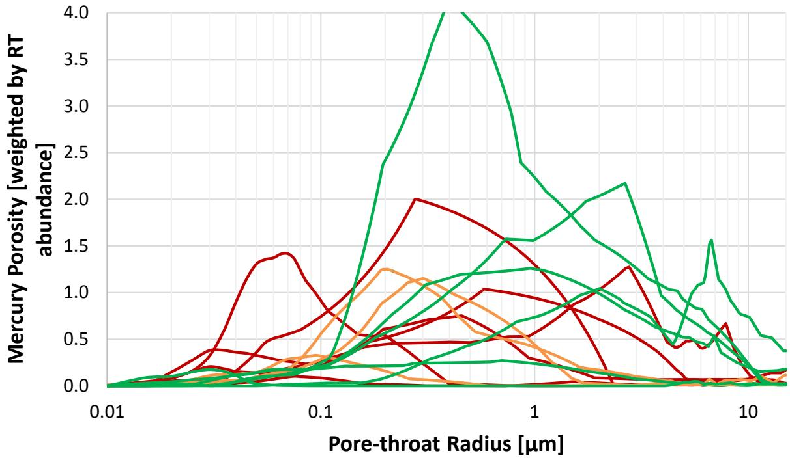
Clear trend distinguishing the high (red) and low (green) secondary IPI samples between 0.02 to 0.1 microns, with high secondary IPI samples (>30 mL) shown in red and low secondary IPI samples (<30 mL) shown in green [1]- The test was developed in the 1970s by Iowa DOT; has been used for four decades as a supplemental decision-making tool [2]
The Iowa DOT maintains a historical database containing over 5,000 IPI analyses for aggregate evaluation. [1]
- Bektas, F., Wang, K., & Ren, J. (2015). Carbonate Aggregate in Concrete: Evaluation of Iowa Pore Index Test and Mercury Intrusion Porosimetry Analysis. MnDOT Report MN/RC 2015-14.
Test Parameters and Methodology
The Pore Pressure Index (PPI) measures the pressure required to force mercury into aggregate pores, indicating total pore volume and connectivity, while the Suction Pore Index (SPI) measures the suction pressure of aggregate pores to indicate pore size distribution. The SPI/PPI ratio provides further insight into pore size distribution and connectivity, where higher ratios indicate finer pore structures. To model the absorption of water into micropores, the test operates at a constant water pressure of 35 psi, with primary load measured during the first minute and secondary load recorded over the subsequent 15 minutes [3]. Although these ranges overlap due to the 35 psi test pressure, PPI correlates with pore volumes in the 0.1–100 µm range, whereas SPI correlates with pores in the 0.01–1 µm range [3].
 Note: The high PPI value of 67001-NC suggests that 35 psi in the first minute of Iowa pore index test might have pushed water into small pores. Figure 5.8. Comparison of Trends of Pore Size Distributions and Iowa Pore Index with Pore Size Volumes of Non-Carbonates (left) and Iowa Pore Indices of Non-Carbonates (right) [3]
Note: The high PPI value of 67001-NC suggests that 35 psi in the first minute of Iowa pore index test might have pushed water into small pores. Figure 5.8. Comparison of Trends of Pore Size Distributions and Iowa Pore Index with Pore Size Volumes of Non-Carbonates (left) and Iowa Pore Indices of Non-Carbonates (right) [3]
Variable pressure testing (15→60 psi) showed PLI increased significantly while SLI was largely unaffected [4]. Consequently, under a heterogeneity-aware method, the 60-second transition point should be replaced with source-specific transition points determined from incremental intrusion plots [4].
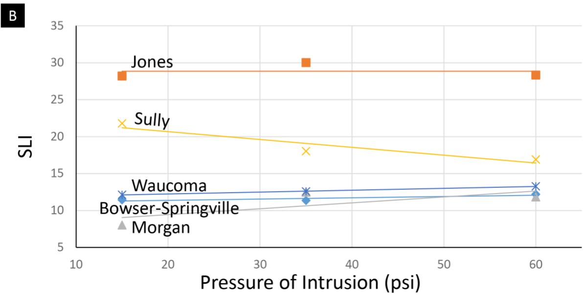
Pressure of intrusion for (a) PLI and (b) SLI for each source [4]Correlation with Freeze-Thaw Durability
A follow-up study tested the Iowa Pore Index against three freeze-thaw performance methods using 27 Minnesota aggregates (15 carbonate, 12 non-carbonate) to assess potential for D-Cracking and Freeze-Thaw Durability issues. The index showed a fairly good correlation with the unconfined freeze-thaw test using ASTM C666 conditioning (R² = 0.51), which recommended a mass loss limit of 8% at IPI = 27 [2], and a fairly good correlation with the CSA A23.2-24A test (R² = 0.47), which recommended a mass loss limit of 5% at IPI = 27 [2]. While the general trend was clear, there was a poor correlation with ASTM C88 (R² = 0.15) [2]. Furthermore, a strong correlation exists between IPI and micropore volume (R² = 0.80) [2], and a secondary load (pore index) > 27 indicates poor freezing-thawing durability [2].
Additionally, a moderate inverse correlation exists between modal pore-throat diameters (MIP) and SLI values [4]. Impurities such as chert, opal, and clay can increase frost susceptibility by weakening the bond between aggregate and cement paste and causing volume instability under changing moisture conditions [3].
 Frost Damage Associated with Concrete Aggregate: D-cracking at a Pavement Joint Intersection (left) and Fractured Carbonate Aggregate (right) [3]
Frost Damage Associated with Concrete Aggregate: D-cracking at a Pavement Joint Intersection (left) and Fractured Carbonate Aggregate (right) [3]
Geological Basis and Lithology Classification
The Iowa Pore Index effectively distinguished between carbonate and non-carbonate aggregates [3], as Carbonate aggregates generally exhibited higher PPI (106-1127 mmHg) and SPI (307-1327 mmHg), whereas Non-carbonate aggregates showed lower PPI (31-291 mmHg) and SPI (99-486 mmHg) [3]. Despite these differences, no significant relationship was found between carbonate content and PPI or SPI [3]. The geological basis of IPI is rooted in the fact that even the most homogeneous-appearing sources contain at least three different rock types with distinct physical and textural attributes [1]. For instance, Limestones with sparite matrix, peloidal grains, and low matrix-to-allochem ratio (grainy texture) have lower secondary IPI than limestones with micrite matrix, skeletal grains, and high matrix-to-allochem ratio (muddy texture) [1], while Dolostones with fine to coarse grains, crystal-supported euhedral to subhedral rhombs, and porous intercrystalline areas are more desirable than dolostones with very fine grains and tightly interlocking crystal mosaic [1]. Furthermore, cumulative intrusion curves for the first five minutes clearly separated limestone and dolostone sources [4].
 Results of the Iowa Pore Index Test—Primary Pore Index [3]
Results of the Iowa Pore Index Test—Primary Pore Index [3]
Regarding lithology simplification, Iowa DOT’s three-category classification (limestone, intermediate, dolostone) can be simplified to two categories for IPI-to-porosity conversion [1]. However, intermediates should be retained as a separate category for assessing mineral stability in deicing salt environments [1]; these intermediate aggregates are defined by a maximum intensity dolomite d-spacing greater than 2.899 Å and exhibit lower thermodynamic stability that is aggravated by deicing salts [1].
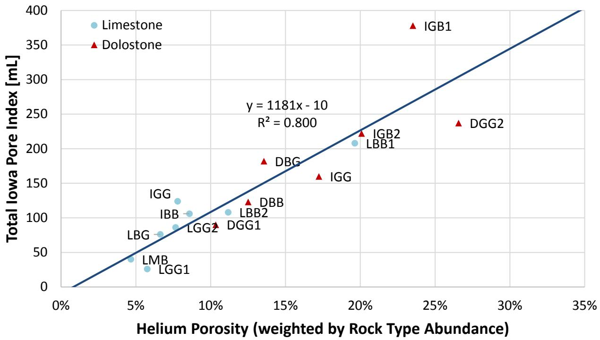
Positive linear correlation between helium porosity, weighted by rock type abundance, and total pore index, with an R2 value of 0.80 [1]IPI-to-Helium Porosity Calibration Models
A follow-up study collected 15 carbonate aggregate sources from Iowa quarries and calibrated each via helium porosimetry, mercury intrusion porosimetry, and thin-section petrography. From this data, linear models were developed to convert IPI values to helium porosity measurements [1]. These models include Total IPI = 1181 × Helium Porosity − 10 (R² = 0.80) [1], Primary IPI = 1183 × Helium Porosity − 41 (R² = 0.76) [1], and Secondary IPI (Limestones) = 465 × Helium Porosity − 4 (R² = 0.73) [1].
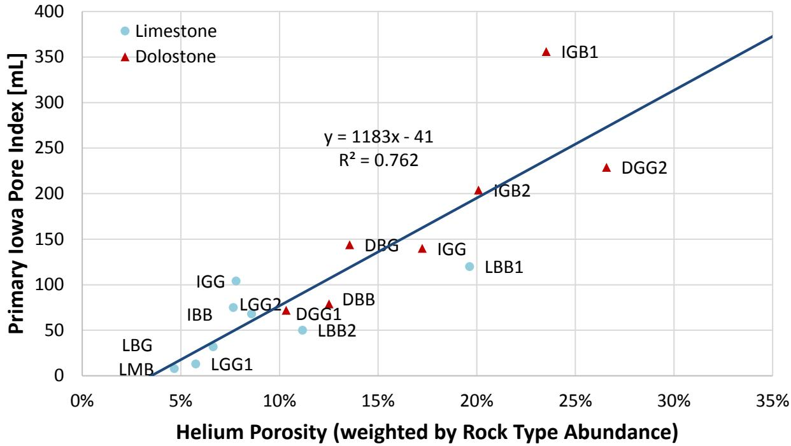
Positive linear correlation between helium porosity, weighted by rock type abundance, and primary pore index, with an R2 value of 0.76 [1]Additionally, the study established models for Secondary IPI (Dolostones) = −131 × Helium Porosity + 47 (R² = 0.39) [1] and the IPI Ratio (Primary:Secondary) = 88 × Helium Porosity − 5 (R² = 0.62) [1].
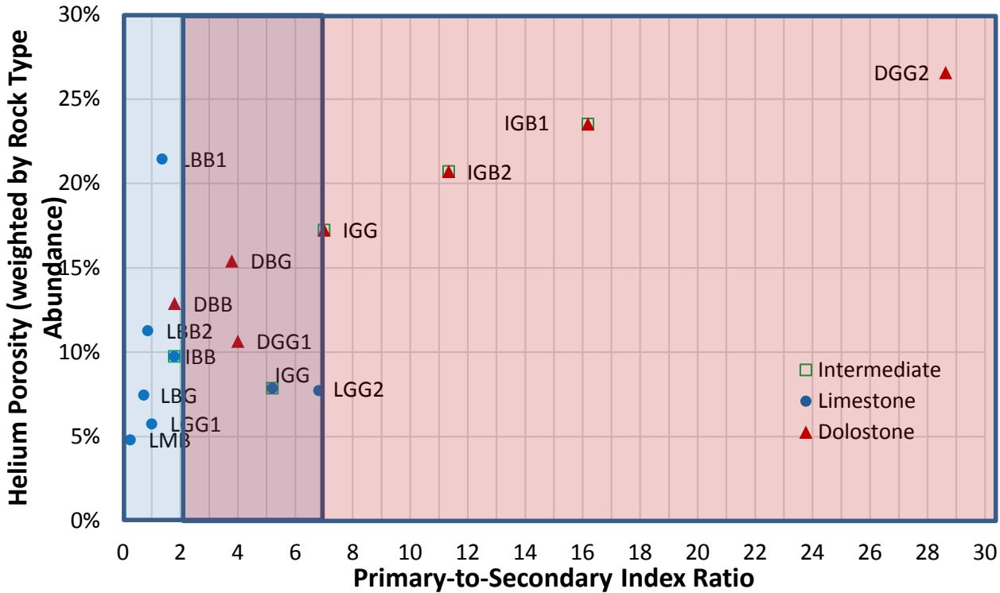
Primary-to-secondary pore index ratio versus helium porosity [1]Critical Pore-Throat Size and Porosity Thresholds
For road construction, desirable helium porosity thresholds vary by lithology, with Limestones requiring less than ~7% [1] and Dolostones requiring greater than ~13% [1]. Regarding durability, the Iowa DOT specifies that coarse aggregates must have a secondary IPI below 30 mL to pass the lowest durability class rating (Class 2) [1]. The critical pore-throat size range for aggregate durability is between 0.02 and 0.1 µm [1], a range dominated by sources with high secondary IPI values [1]. Furthermore, Limestones have modal pore-throat diameters less than ~0.4 µm, whereas Dolostones possess larger modal pore-throat diameters (>0.4 µm) [1].
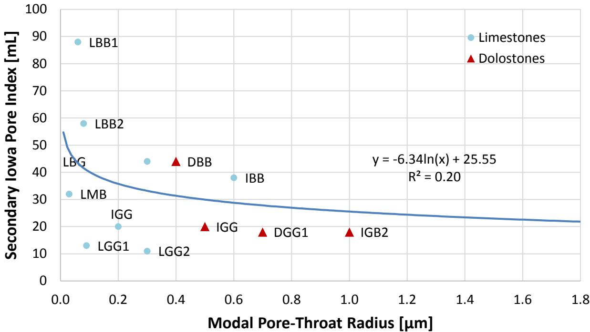
Large pore-throat diameters yielding low secondary Iowa IPI values [1]While the traditional 60-second transition point between macropore and micropore intrusion was found to be too long, all 21 sources completed macropore intrusion within 2–12 seconds [4], with most macropore intrusion concluding within 15 seconds [4]. Specific lithology-specific transition points include 2.7 seconds for Limestone, 5.0 seconds for Intermediate (mixed LS/DS), and 7.8 seconds for Dolostone [4]. Additionally, 5 of 11 sources with rock types in the critical pore-throat range (0.02–0.1 µm) were classified as durable (Class 3 or 3i), suggesting the critical range relationship to D-Cracking may need re-evaluation [4].
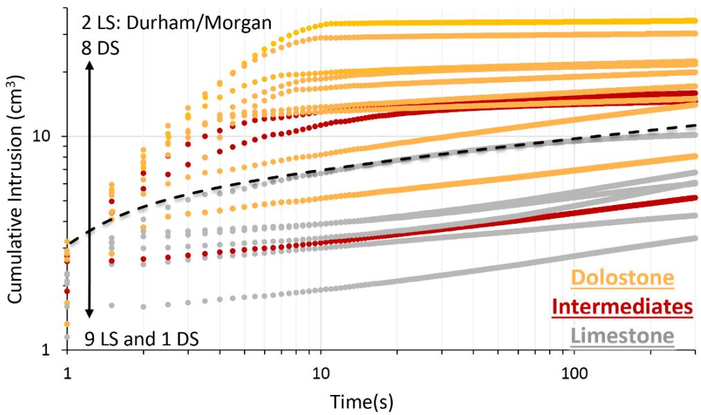
Cumulative intrusion curves for 1,100 cm3 chamber [4]Third-Generation (3G) Device Improvements
A Phase II study developed a third-generation (3G) IPI device using the FlowTrac-II system, testing 21 carbonate sources (10 dolostones, 11 limestones) to calibrate the IPI against mercury intrusion porosimetry and thin-section petrography. This 3G device utilizes automated fluid intrusion measurement via the FlowTrac-II system to eliminate operator error associated with manual fluid level readings, enabling data recording at intervals as short as 0.1 seconds [4]. The 3G device (FlowTrac-II) uses 1,000 g samples (vs. 4,500 g for 2G) with two chamber sizes (1,650 cm³ and 1,100 cm³), recording at 0.5-second intervals up to 70 psi [4].
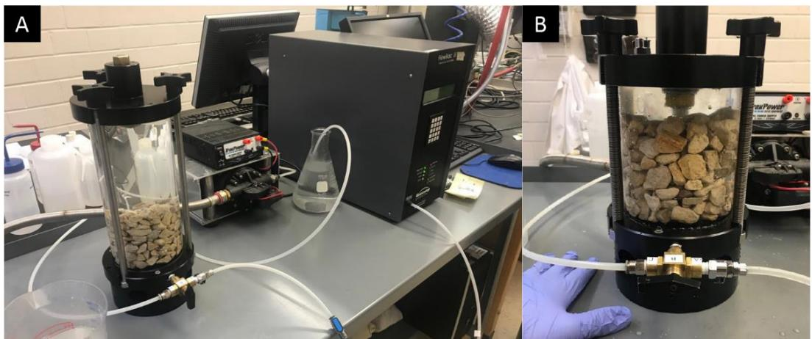
Third-generation IPI device (a) with 1,650 cm3 chamber and (b) with 1,100 cm3 chamber [4]Decreasing chamber size from 1,650 cm³ to 1,100 cm³ reduced initial soak time by 56% and increased total recorded intrusion [4]. While 3G PLI and SLI values were comparable to the 2G device, they featured improved accuracy [4]. Additionally, because 95% of Plexiglas expansion occurred within the first minute, a pre-test chamber expansion measurement was adopted [4].
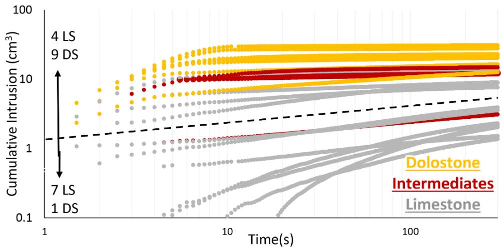
Cumulative intrusion curves plotted for studied samples with 1,650 cm3 chamber [4]Advanced Testing and Special Investigation Methods
For sources with ambiguous IPI results, rock typing each component lithology and analyzing them individually can identify specific non-durable rock types [4]. To enhance predictive accuracy for portland cement concrete performance, the Iowa Pore Index test can be integrated with X-ray diffraction to measure dolomite mineral structure via peak shift and X-ray fluorescence to quantify calcite-to-dolomite ratios and clay content using alumina [1].
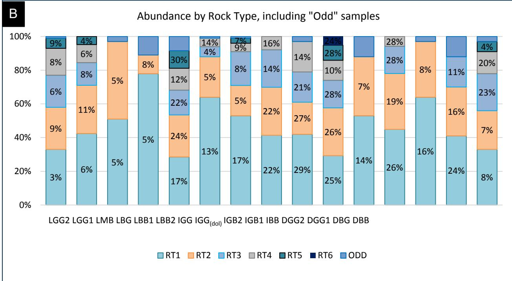
Different rock types occurring in different abundances and having different porosities [1]Practical Applications and Quality Control
The test provides complementary information to absorption testing for aggregate quality assessment, where a combination of high specific gravity (>2.60) and low absorption (<1.75%) indicates a low SPI value, which may serve as an additional indicator for assessing aggregate freeze-thaw durability [3]. This process assists in evaluating aggregate suitability for concrete pavements, supporting specification development for aggregate acceptance criteria, and maintaining quality control for aggregate sources used in concrete construction. To achieve this, the Iowa DOT utilizes an overall quality number that integrates the Iowa pore index test results with XRF chemistry analysis and XRD mineralogy data to evaluate aggregate suitability [3]. Furthermore, Iowa DOT ledge control practices involve evaluating individual quarry beds rather than stockpiles to account for lateral facies grading, though recent mine safety regulations have complicated direct bed sampling [1].
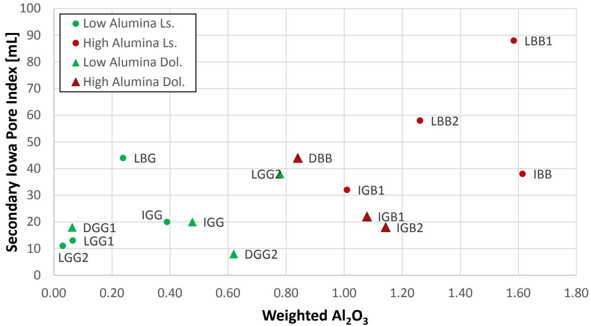
Separation in alumina data between what the Iowa DOT considers to be highalumina aggregates and low-alumina aggregates [1]Related Concepts
- Mercury Intrusion Porosimetry
- Carbonate Aggregate
- Freeze-Thaw Durability
- D-Cracking
- Absorption (Aggregate)
- Aggregates
References
- F. Hasiuk, M. F. A. Ridzuan, and P. Taylor, "Calibrating the Iowa Pore Index with Mercury Intrusion Porosimetry and Petrography," Institute for Transportation, Ames, IA, Rep. InTrans Project 15-553, 2017. [Online]. Available: https://www.intrans.iastate.edu/wp-content/uploads/2018/03/Iowa_pore_index_calibration_w_cvr.pdf
- F. Bektas, W. Cai, and K. Wang, "Aggregate Freezing-Thawing Performance Using the Iowa Pore Index," Center for Transportation Research and Education, Ames, IA, 2016. [Online]. Available: https://www.cptechcenter.org/wp-content/uploads/2018/03/aggregate_freezing-thawing_using_Iowa_pore_index_w_cvr.pdf
- F. Bektas, K. Wang, and J. Ren, "Carbonate Aggregate in Concrete," Institute for Transportation, Ames, IA, 2015. [Online]. Available: https://www.intrans.iastate.edu/wp-content/uploads/2018/03/201514.pdf
- J. F. Orso, IV and F. Hasiuk, "Calibrating the Iowa Pore Index with Mercury Intrusion Porosimetry and Petrography — Phase II," Geological and Atmospheric Sciences, Ames, IA, Rep. InTrans Project 15-553, 2019. [Online]. Available: https://www.cptechcenter.org/wp-content/uploads/2019/10/calibrating_Iowa_pore_index_phase_II_w_cvr.pdf
Feedback on this page